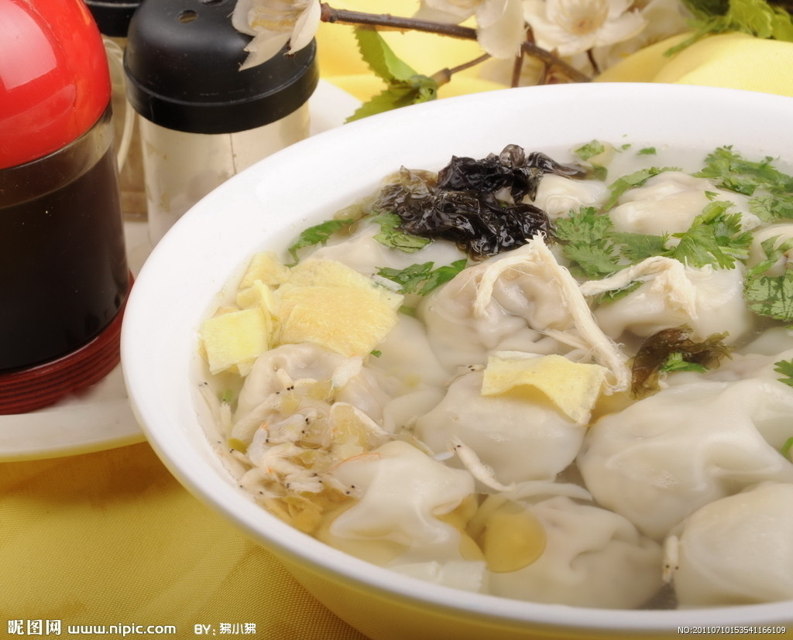
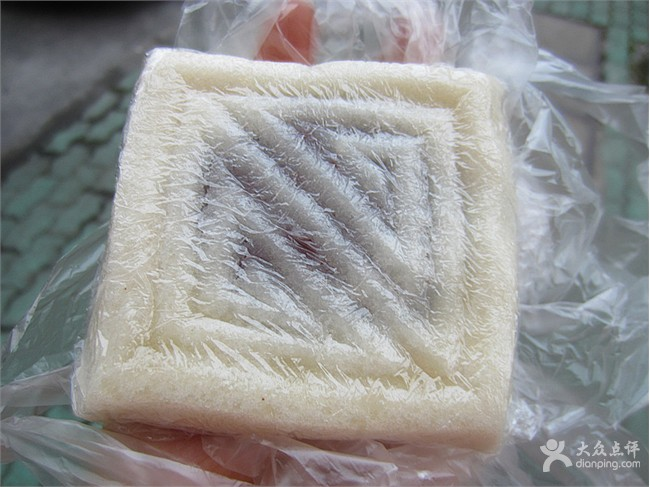

Part I: The Basics
1: How do you pronounce your real name?
Weiyi (W-ei-y-i:) It's pretty straightfoward. But my last name Cai is pronounced like "Tsai", not "Kai".
But I have given up on correcting people on that one.
I am from Hangzhou, China. Here's the map.Pronounced as ['hɑ:ŋ'dʒəu] if you are familiar with the Phonetic Alphabet. It's a beautiful city in the south eastern part of China, close to Shanghai. It's a big city if put in an American standard, there's more than 8 million people in the city. Famous for West Lake, which makes it a touristy place.
Here's a glimpse of a part of the city that is very close to where I live: 
Part II: Chinese Food
1: What do you think about the Chinese food in America? Is it authentic at all?
They are just a totally different genre of food. It's definitely based on authentic Chinese food, but somewhere along the line, I don't know if it's the ingredients or cooking process changed, here comes this hybrid kind of food called American Chinese food. Another thing is Chinese cuisine is so variegated different region has different style, it is very hard to mimic. American Chnese food is a mixture of a lot of things and more simple. For me I eat them as different kind of food, there's not that much of a comparison. But I do have to say Fortune Cookies do not exist in China.
I can't think of an absolute favorite since I eat almost everything. And I guess explaining food through words is one of the hardest tasks. So I will just show you a few.
Yes they are chicken feet.
It's fish and very spicy.

Yes, Wonton soup. Trust me they are so different and so much better in China.

It's a kind of traditional Chinese dessert/dim sum. With red bean filling.
E Mei Restaurant is pretty good, it's near China on Arch street.
Dim Sum Garden is getting really famous. I love dim sum so it's great, but not all are good.
Part III: Language
1: Do you dream in Chinese or English?
Haha I think Iusually dream in pictures.
It really depends on what I'm thinking. If I'm thinking things and people in the States, I think in English; if it's people and things at home, I think in Chinese. However, I see myself thinking and talking to myself more in English now. When I was little I used to talk to myself in English just as a way of practicing English and it was weirdly fun. So now this habit has been enhanced. It is a little sad how I don't practicie my native langugage as much as I would like to. But I am immersed in an English-speaking environment, my thoughts/speaking are used to English language. More and more I find things I can't say in Chinese, and of course there are a lot of things I can't say in English. Very selfishly speaking, I wish everyone around me were bilingual, that would be much easier for me haha.
Technically elementary school since first grade. It got more serious and I really started learning in fourth grade and middle school was when I learned the most in terms of grammar and vocabs. I learned the most through music though haha. It's an ongoing learning process.
Madarin, like the majority of Chinese.
I wish. I have had a hard time with Spanish and I did a little Italian while I was studying abroad in Florence. I would say I definitely know some tricks and tuned to find out patterns in language, but it's not like I can just pick a third language easily. My English learning is built upon years of practice, exposure and interest, yes, if I had that with another language, I would be able to speak it as well. But it just doesn't happen in a few days not even a few months.
Part IV: Internet
1: Do you have Netflix in China?
Unfortunately, I don't think so.
There is Facebook in China, you just have to use a Proxy to hide your Chinese IP to get on it if you are in Mainland China. Chinese government has blocked Facebook, Twiter, Youtube, Google, etc. But it doesn't mean Chinese people don't know about all those stuff, and China has its own version of all those social media.
I have never heard such cases. I never had trouble when I was at home and my foreign co-workers last summer never complained. The trick is to find the right proxy and the good ones are always charged.
Part V: Politics
1: What do you think about North Korea?
Umm. Historically, geographically, and maybe even politically today, I believe North Korea and China are close friends. But I don't think the Chinese gereral public's opinion on North Korea is that much different from those of Americans. They are basically living in China in the 1980s.
This is such a loaded question. I know that the idea of "Communism" is scary to Americans. Although yes, we have our Internet censored, we only have one party, and the party sets a lot limitations especially in terms of the freedom of speech. However, it is still a free country to live in. Especially with the econimic growth, China is becoming more and more westernized. It's not like everyone born in China is forced to join the Communist party. I can only speak from personal experience, in day-to-day life, I don't feel any more free when I'm in the States or any less free when I'm at home.
It all depends on the context and medium in which you say those things. If it's a conversation with your friends, family or even in class, it's a closed environment, you would be fine; people do it all the time. On the Internet, if you say something over the line, your comment would be censored or deleted. It's when your speech is spread out in the public via media or you claim it on the Internet and be persistant about it that you would get into trouble. Artist Ai Wei Wei is a good example, he has said and done a lot anti-government things under a global context and now he is not allowed to go out of the country.
Part VI: Miscellaneous
1: What's the hardest part about moving to America?
If you asked me this question three years ago, I would say it's the homesickness; there were actually times when I was crying on the phone with my parents.
If you asked me this question two years ago, I would say it's the social scene and feel comfortable socially. Even though I have a lot friends, sometimes I still feel outside out of the social loop. I always find it's so easy for me to act social and outgoing amongst Chinese people both in the States and in China, but it's hard for me to do so with Americans. I still kind of struggle with this.
If you asked me this questions a year ago, I would say it's to keep in touch with people both at home and here. It's not really a good feeling, knowing your life is somehow separated and the two groups of people and experience would not overlap.
But now, while all the above might still be true, I would say it's the phsycial inmobility. When you know something happened at home, but you are trapped here. It's the guilt that you are being selfish and not taking care of your parents. It's the fear that I would miss out on so many things going on with the people closest to me and every important even would ultimately just turned into a phone call. I wasn't there at my closest cousin's wedding, I wasn't there when my grandmother passed away, I wasn't there when my mom got into an accident, my cousins' children would not even know who I am, etc. All these makes me question if I am a terribly selfish person and wonder what is important in life and how to deal all the strings attached on me
My dogs, haha. Other than my family and my mom's cooking, I definitely miss the public transportation a lot. It is easy and cheap to get to places, I miss being able to bike or walk or take buses everywhere. Other than that,
For now, that's the plan. I believe that the four years of college, however fast it flies by, it molds me into a person tremendously. Even though I still feel I don't anything about anything, I know that I have grown a lot emotionally and intellecutally these four years and this is based on a very western edcuation and culture. My ideal workplace hardly exists in China, and specificaly for design, there's definitely more to learn in America than in China. But I'm not the kind of person who builds a blueprint for life and walks along it.
Haha, I'm lucky that my parents are very open-minded.
I pray no one would ask me this question ever again. I like both countries for different reasons. Neither place is perfect, but to me each place means different things to me. One is family, roots; another is friends, dream and passion. I would not be me without either place.